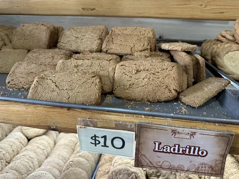
Ladrillo
$10 la pieza
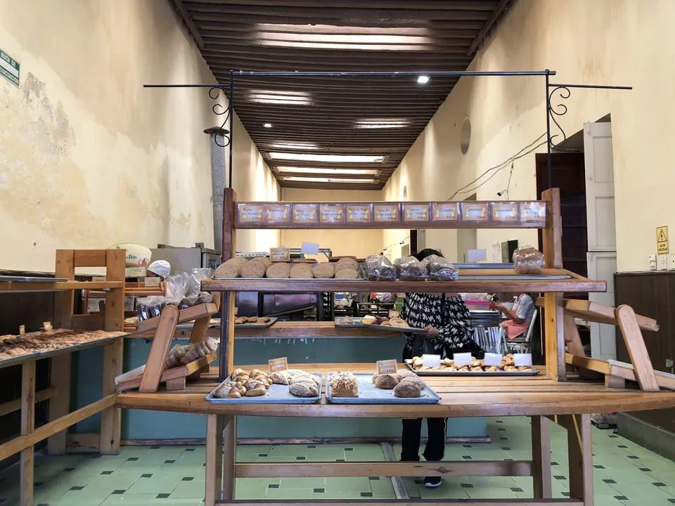
Venustiano Carranza 110A, Centro.
Todos los días de 8:00 a 20:30.
4.7 en Google, 565 opiniones · desde 1996
Lo que sale del horno

$10 la pieza
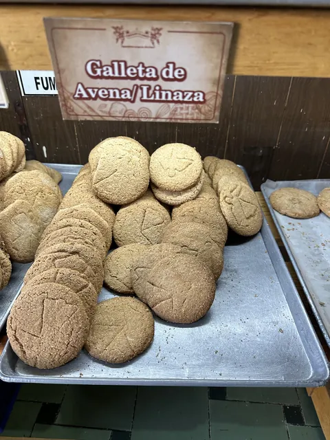
Pregunta el precio
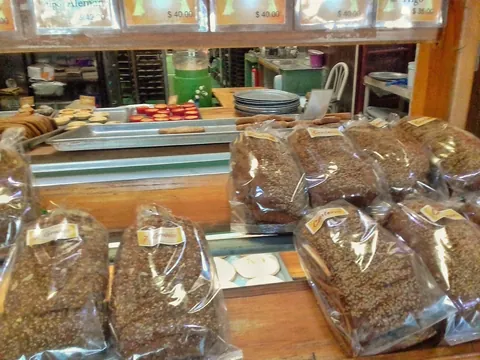
Pregunta el precio
Pregunta el precio
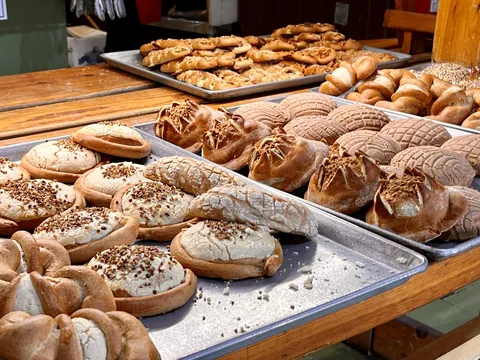
Pregunta el precio
Pregunta el precio
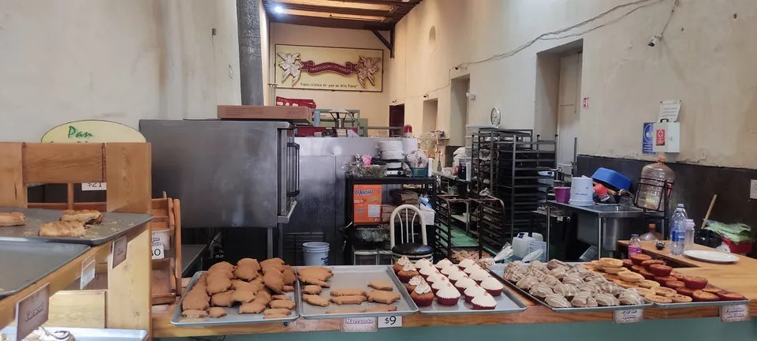
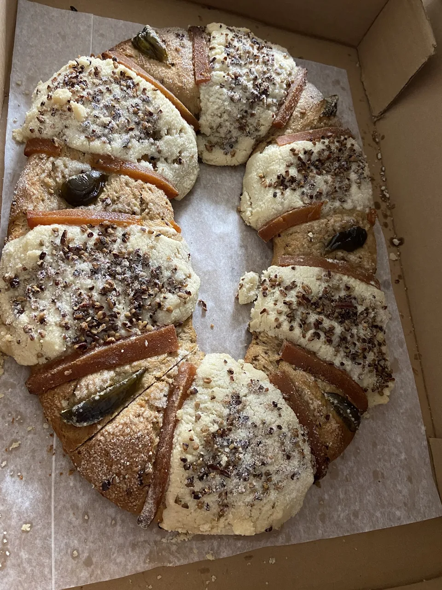
“Pan integral de lo más delicioso.”Opinión en Google
Pregunta qué hay hoyLo que escriben quienes ya se llevaron su bolsa.
“Me agrada mucho esta pastelería, es higiénica, el pan es de muy buena calidad y delicioso. Mis preferidos son los cuernitos rellenos de cajeta.”
“Las galletas de naranja sumamente ricas, me encantaron.”
“Amo que tengan opciones sin azúcar, ¡no es solo para diabéticos! Compramos rosca de reyes sin azúcar nevada y a todos nos encantó.”
“Bien organizado, muy limpio. El pan muy rico y muy bien presentado.”
“El pan es muy rico.”
“Pan delicioso y las mini roscas. Buenos precios.”
“El pan es delicioso, un poco caro pero lo vale, está muy rico.”
Lo que más mencionan en sus 565 opiniones
Venustiano Carranza 110A, a media cuadra del Centro.
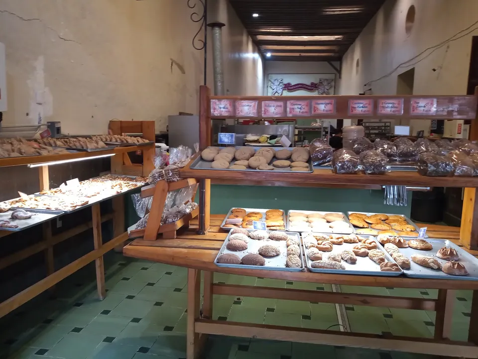
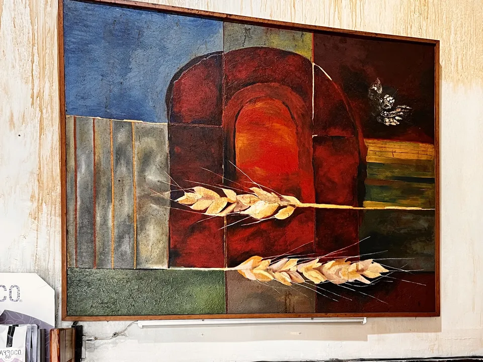
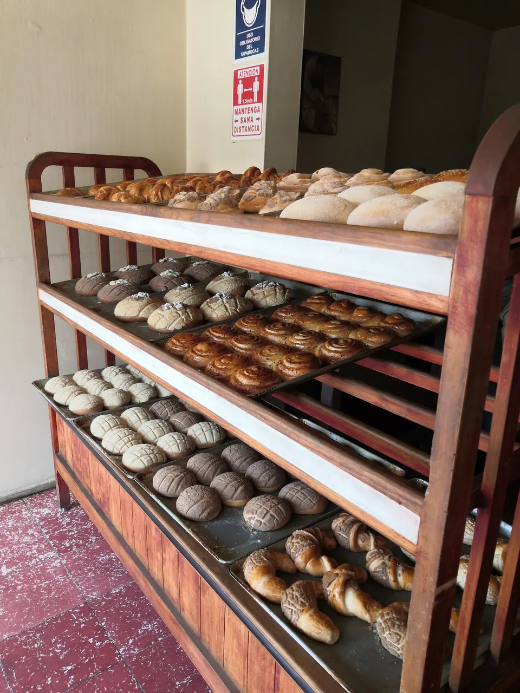
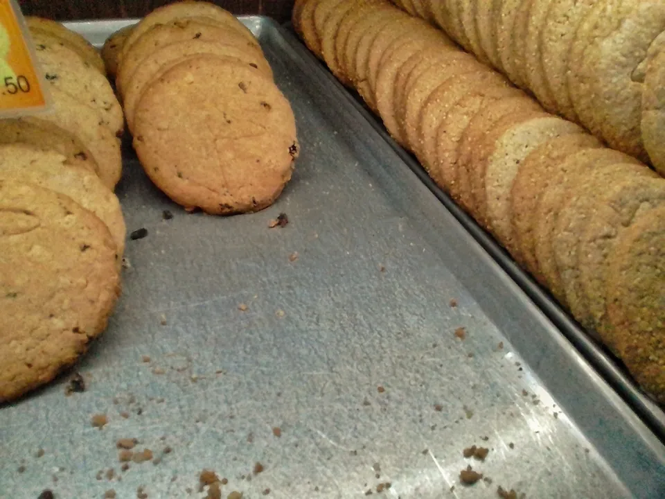
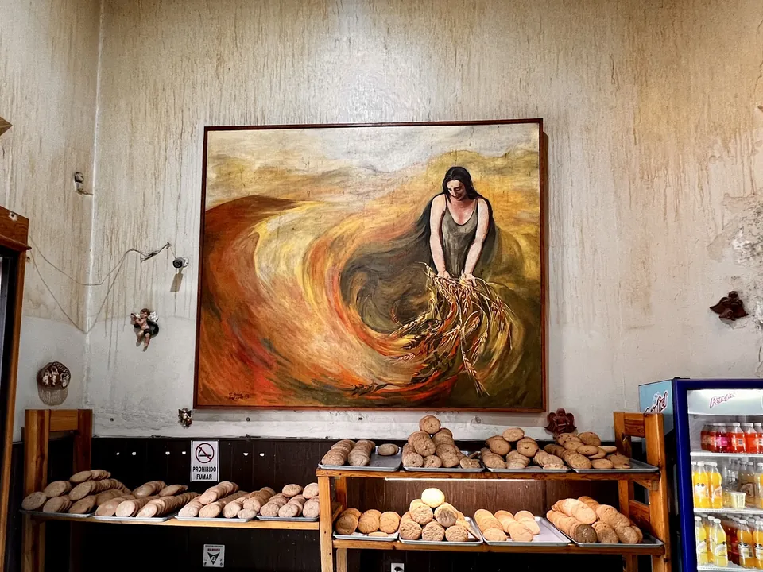
Abre todos los días de 8:00 a 20:30
Venustiano Carranza 110A, Zona Centro, 20000 Aguascalientes, Ags.
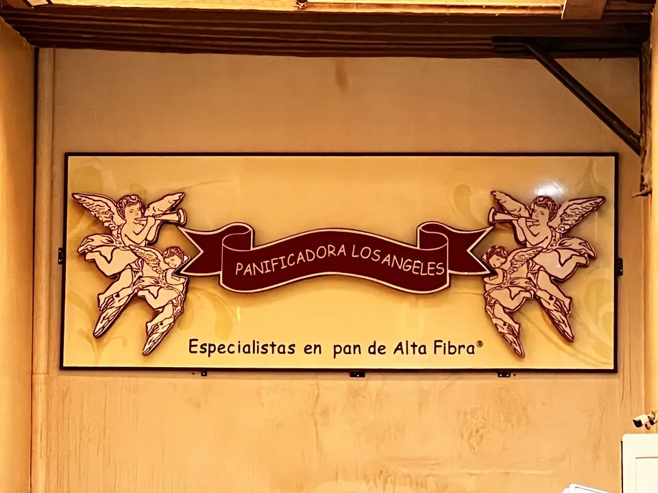
Sí. La rosca de reyes nevada sin azúcar es de las que más piden. Pregunta qué salió hoy.
Pan integral, cuernitos rellenos de cajeta, conchas, galletas y pan de caja.
Todos los días, de 8:00 a 20:30, en Venustiano Carranza 110A.
Sí. Arma tu bolsa aquí arriba y mándala por WhatsApp; pasas y te la llevas.
Cada temporada, como cada año. Escríbenos para apartar la tuya.
Pásanoslo por el mismo chat donde te llegó esta muestra.